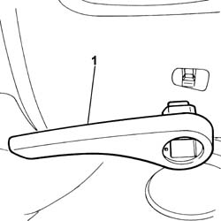

7045A25 SQUAB LUMBAR KNOB - R R
- Path
- Procedures > 70 FITTINGS > 7045 FRONT SEATS > 7045A FRONT SEAT ASSEMBLY > 7045A25 SQUAB LUMBAR KNOB - R R
- Kind
- repair procedure (removal / refitting; the operation number is the code)
- Applies to
- all engines; all production periods
- Interactive page
- https://sloeber94.github.io/elrnDB-fUlss/en/#/179007845
Applies to: all engines; all production periods
 Removing
Removing
 Refitting
Refitting- Move the seat lengthwise until it is in the front end of travel position.
- Remove the trim cap.
1. Remove the backrest lumbar adjustment knob using the inner retaining clips.

Applies to: all engines; all production periods
Refitting
Removing- Fit the backrest lumbar adjustment knob and check that the device is working properly.
- Fit the trim cap.
- Place the seat in the correct driving position.